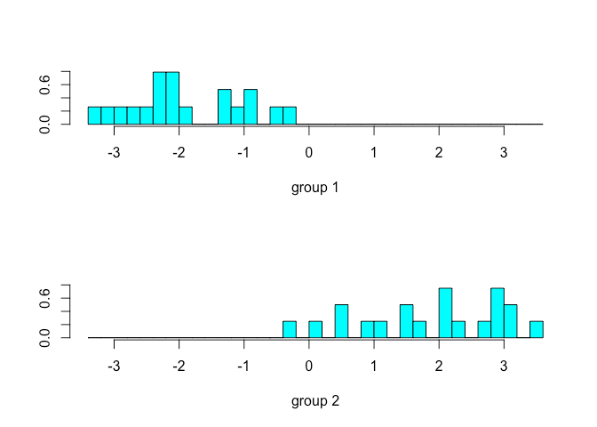

The term 'discriminant analysis' is often used interchangeably to represent two different objectives. These objectives of discriminant analysis are:
-
Description of group separation. Linear combinations of variables, known as discriminant functions, of the dependent variables that maximize the separation between the groups are used to identify the relative contribution of the \(p\) variables that best predict group membership.
-
Prediction of observations to groups using either linear or quadratic discriminant functions, known as LDA and QDA, respectively.
This post will explore the first objective of discriminant analysis with two groups. Future posts will examine the classification and prediction objective of discriminant analysis.
Discriminant Analysis for Two Groups
Discriminant analysis assumes the two samples or populations being compared have the same covariance matrix \(\Sigma\) but distinct mean vectors \(\mu_1\) and \(\mu_2\) with \(p\) variables. The discriminant function that maximizes the separation of the groups is the linear combination of the \(p\) variables. The linear combination denoted \(z = a′y\) transforms the observation vectors to a scalar. The discriminant functions thus take the form:
To compute the discriminant function coefficients, first find the sample means \(\bar{z}_1\) and \(\bar{z}_2\). The mean can be found by averaging the \(n\) values or as a linear combination of the sample mean vector \(y_1\), \(\bar{y}\)
Where,
The goal is to then find a vector \(a\) that maximizes the standardized squared difference \((\bar{z}_1 - \bar{z}_2)^2 / s^2_z\). The sample variance \(s_z^2\) is the sample variance of \(z_1, z_2, \cdots, z_n\) or from the vector \(a\) and the sample covariance matrix of the mean vectors \(y_1, y_2, \cdots, y_n\), denoted by \(S\).
Thus the standardized squared distance \((\bar{z}_1 - \bar{z}_2)^2 / s^2_z\) can also be written as the following:
Where \(S_{p1}\) is an unbiased estimator of the covariance matrix \(\Sigma\). \(S_{p1}\) is defined as:
Where \(W_1\) and \(W_2\) are defined as matrices of the sample sum of squares and cross products.
For \(S_{p1}\) to exist, \(n_1 + n_2 − 2 > p\) must be satisified.
The maximum of the above function is found when \(a\) is equivalent or a multiple of the following:
Since \(a\) can be a multiple of the above, it is not unique; however, its direction is unique. By 'direction', it is implied the relative values of the vector \(a, $a_1, a_2, \cdots, a_p\) are unique.
Discriminant Analysis in R
The data we are interested in is four measurements of two different species of flea beetles. All measurements are in micrometers (\(\mu m\)) except for the elytra length which is in units of .01 mm. The data were obtained from the companion FTP site of the book Methods of Multivariate Analysis by Alvin Rencher.
Read the data and give the columns names for reference.
beetles <- read.table('BEETLES.DAT', col.names = c('Measurement.Number', 'Species', 'transverse.groove.dist', 'elytra.length', 'second.antennal.joint.length', 'third.antennal.joint.length'))
The dplyr package will be used for simple data manipulation.
library(dplyr)
Separate the two groups into different data frames.
beetle1 <- filter(beetles, Species == 1)[,3:6]
beetle2 <- filter(beetles, Species == 2)[,3:6]
Store the sample size and means of the two groups for later.
n1 <- nrow(beetle1)
n2 <- nrow(beetle2)
beetle1.means <- apply(beetle1, 2, mean)
beetle2.means <- apply(beetle2, 2, mean)
First, \(S_{p1}\) must be calculated.
w1 <- (n1 - 1) * var(beetle1)
w2 <- (n2 - 1) * var(beetle2)
sp1 <- 1 / (n1 + n2 - 2) * (w1 + w2)
As mentioned above, the groups are maximally separated when \(a = S_{p1}^{-1}(\bar{y}_1 - \bar{y}_2)\).
a <- solve(sp1) %*% (beetle1.means - beetle2.means)
a
## [,1]
## transverse.groove.dist 0.3452490
## elytra.length -0.1303878
## second.antennal.joint.length -0.1064338
## third.antennal.joint.length -0.1433533
The output of which gives us the linear discriminant function coefficients. However, as noted earlier, the data is not commensurate and therefore needs to be scaled to provide any meaningful interpretation. The linear discriminant analysis coefficients can be standardized by \(diag(S_{p1})^{1/2}a\).
diag(sp1)^(1/2) * a
## [,1]
## transverse.groove.dist 4.136640
## elytra.length -2.500550
## second.antennal.joint.length -1.157705
## third.antennal.joint.length -2.067833
Which gives us the following discriminant function:
The interpretation of the discriminant function can be made in several ways. The most simple is to rank the absolute value of the coefficients and determine contribution based on the order of the coefficients. Another method is to perform a partial F-test to find the significance of the variables.
Judging from our discriminant function, it appears the first measurement is the most significant while the second and third measurements have similar contribution to group separation.
The MASS package contains the function lda() for performing linear discriminant analysis.
library(MASS)
##
## Attaching package: 'MASS'
## The following object is masked from 'package:dplyr':
##
## select
The lda() function takes a formula argument.
beet.lda <- lda(Species ~ .-Measurement.Number, data = beetles)
beet.lda$scaling
## LD1
## transverse.groove.dist -0.09327642
## elytra.length 0.03522706
## second.antennal.joint.length 0.02875538
## third.antennal.joint.length 0.03872998
Note the discriminant function coefficients are different than what we computed earlier. This difference is due to another scaling method employed by the lda() function. Since any multiple of \(a\) can be taken as the maximum vector, either vector would suffice as the solution. We can see the coefficients are scaled differently than the \(a\) vector we found earlier. Despite this difference in scaling, output of the lda() function would still provide the same interpretation of the coefficients if they were ordered by their absolute values.
beet.lda$scaling / a
## LD1
## transverse.groove.dist -0.2701715
## elytra.length -0.2701715
## second.antennal.joint.length -0.2701715
## third.antennal.joint.length -0.2701715
The group separation can be plotted by using the plot() function from the MASS package. Note since we are only concerned with one discriminant function the plot will be a histogram rather than a scatterplot.
plot(beet.lda)

Summary
This post explored the objective of group separation using discriminant function analysis. By performing and interpreting a discriminant analysis function, one can get a better sense of what contributes the most distinction between the sample groups. As we will see in future posts, the discriminant function can also be used to classify and predict future observations.
References
Rencher, A. C. (2002). Methods of multivariate analysis. New York: J. Wiley.